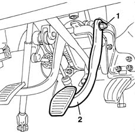

3330B23 brake pedal - r r for rhd versions
- Path
- Procedures > 33 BRAKING SYSTEM > 3330 HYDRAULIC BRAKING SYSTEM > 3330B pedal unit > 3330B23 brake pedal - r r for rhd versions
- Kind
- repair procedure (removal / refitting; the operation number is the code)
- Applies to
- all engines; all production periods
- Interactive page
- https://sloeber94.github.io/elrnDB-fMltpl/en/#/2891610
Applies to: all engines; all production periods; only with equipment: Right hand drive
 Removing
Removing
 Refitting
Refitting1. Undo the nut fixing the brake pedal.
2. Remove the brake pedal from the splined end of the support pin.

Applies to: all engines; all production periods; only with equipment: Right hand drive
Refitting
RemovingPosition the brake pedal.
Tighten the fixing nut to the recommended torque.
 | Fastening | Component | Ø | Value (daNm) |
|---|---|---|---|---|
- | Nut | BRAKE PEDAL | M8 | 1.5 |